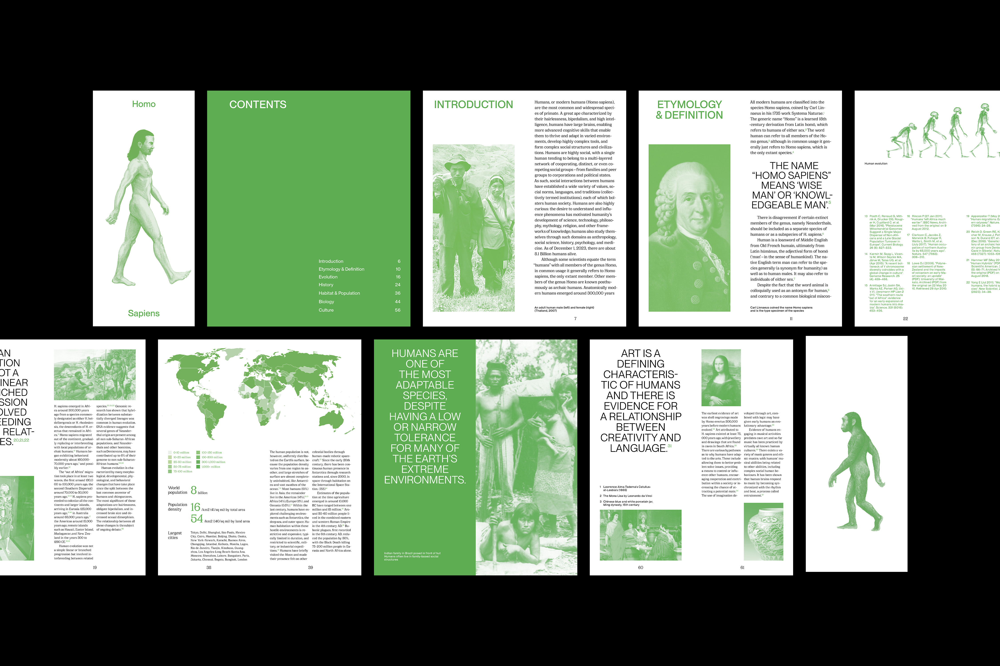
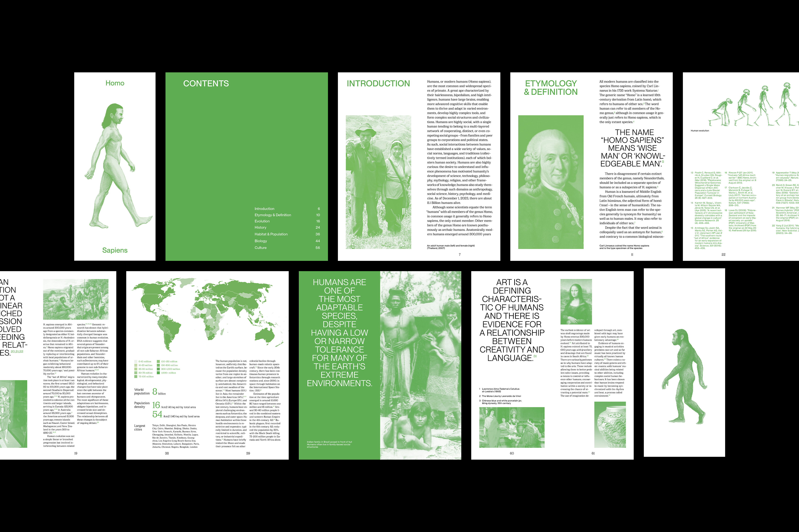

Book
Homo Sapiens

Dec 2023
Printed matter
102 x 237 mm
Printed matter
102 x 237 mm
This book is based on content from Wikipedia about Homo sapiens, reimagined through a cohesive visual system.
The design centers around a green color palette, symbolizing the vitality and continuity of human life.
A mix of serif and sans-serif typefaces creates a clear typographic hierarchy—distinguishing titles and quotes from the body text—while reinforcing the balance between history and modernity in the narrative of our species.
 
